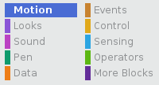

Click on the Motion menu in the Scripts palette.

Find the go to x: ( ) y: ( ){:class="blockmotion"} block.

Type in the x position and y position that you want your sprite to go to.
If you only want to set the x or y position, you can use either of the following two blocks instead.